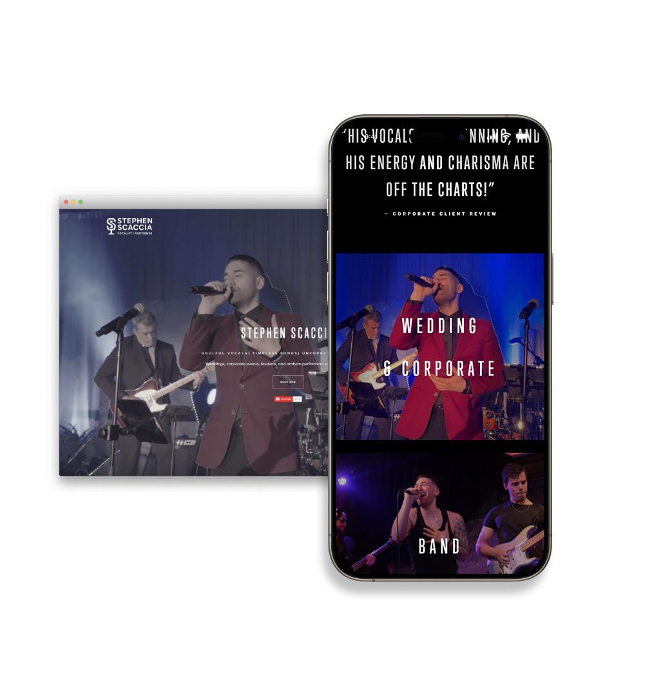
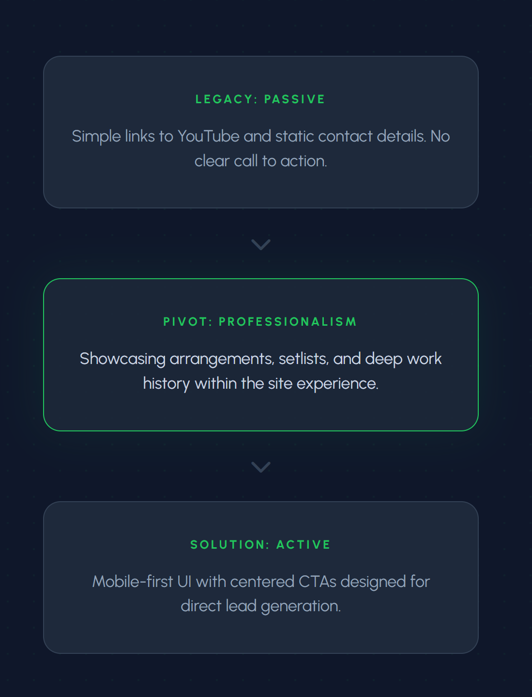

Client project · UX & Systems Designer · 6 weeks
Converting a fragmented digital presence into a high-fidelity booking engine, resulting in 15+ direct client bookings within the first month of launch.

A professional performer's digital presence was built on a non-responsive, passive framework with no clear booking pathway, no content hierarchy, and no mobile experience, resulting in zero direct client inquiries despite an active social following.
Most visitors were arriving from mobile after discovering performance clips on social media, but the site gave them nowhere to go from there. Visitors were landing, watching one video, and leaving.
The site wasn't failing because of bad design. It was failing because it wasn't designed for how people were actually arriving.
I redefined the digital strategy to prioritize active conversion. By featuring band arrangements, song setlists, and high-fidelity galleries in a mobile-responsive environment, we shifted the value proposition from "watch a video" to "book now."
Key decisions included treating each band configuration as a distinct offering, designing a mobile-first grid to surface examples quickly, separating booking-focused content from deeper exploration, and making the setlist easy to update without site maintenance.

"Having a site that finally matches the quality of my work has completely changed how I approach outreach."— Stephen Scaccia, Performer
The final product did more than update the visuals. It changed how the client approached their business. The modular content patterns allow new performances and setlists to be added without developer support, keeping momentum long after launch.
View live site ↗